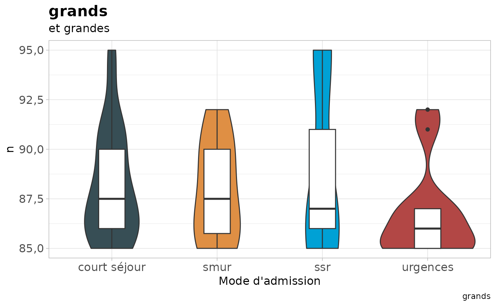
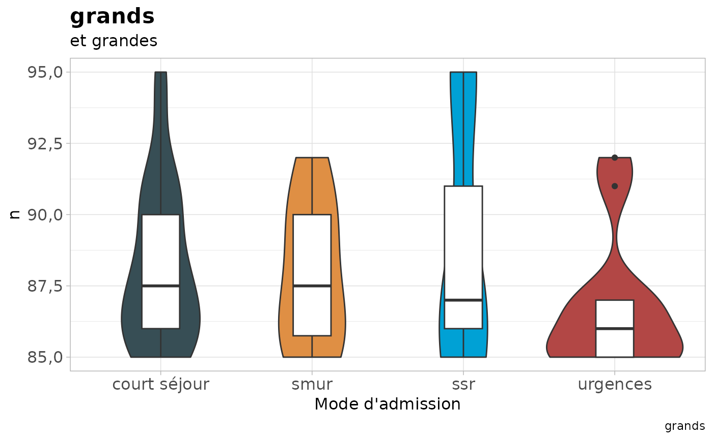

Graphique violon + boxplot
Examples
data("patients")
vioboxph(patients, admission, age, titre ="grands", stit = "et grandes", titx = "Mode d'admission")

Graphique violon + boxplot
data("patients")
vioboxph(patients, admission, age, titre ="grands", stit = "et grandes", titx = "Mode d'admission")
